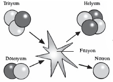
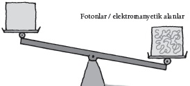

Evrenin dayandığı denklem
Hadi bir denklem düşünün bakalım. İster sevmiş ister tahammül etmiş olun onca yıllık eğitimin ardından okulda öğrenmiş olduğunuz denklemlerden birinin olsun aklınıza gelmesini beklersiniz. Ama gelmez. Onun yerine, muhtemelen tesadüfen öğrenmiş olduğunuz bu denklem zihninizde beliriverir.
Bu denklem dünyanın en ünlü denklemidir. 1946’da Time dergisinin kapağında çıkmıştı, o zamandan beri de kültürümüzün bir parçası haline gelmiş; sanatçılara, müzisyenlere, yazarlara ve yönetmenlere ilham kaynağı olmuştur. Tüm küreyi dolaşmıştır: Japon bir grafik şirketinin logosunda da karşınıza çıkar, İngiltere’nin kırsal kesiminde bir halkla ilişkiler şirketinde de Toronto’da bir kuaför salonunda da. Peki, ama neden? Çünkü bu denklem modern dünyanın sahip olduğu biçimi nasıl almış olduğunu özetler.
Einstein’ın 1905’te yazdığı bu denklem, dünya onun ne yapabileceğini gördüğünde 40 yaşına gelmişti; bu keşif karşısında titredik. Time dergisinin kapağında, Pasifik’te ateş altında kalmış bir mercan resifinin üzerinde yükselen mantar bulutunun üzerine yazılmıştı. E=mc2 atom bombasının ardındaki denklemdir. İkinci Dünya Savaşı’nı bitirmiş, nükleer güç ve nükleer tehdit dönemini başlatmıştır. Bu denklemle birlikte Soğuk Savaş ve ilk kez insan ırkının topyekûn imha edilmesi ihtimali belirmiştir. Soğuk Savaş’ın artık geride kalmış olduğu şu günlerde bile, yanlış insanların küçücük bir kütleyi muazzam bir miktarda enerjiye nasıl çevirebileceğini öğrenmesi ihtimali tepemizde bir kılıç gibi asılı durmaktadır.

NÜKLEER FÜZYON
Gelgelelim sevindirici hakikat E=mc2’nin bir bombadan çok çok daha güçlü olduğudur. Bu denklem hayatımızın, devam eden varoluşumuzun ve belki de geleceğimizin kökenidir. Gerçekliğin temel doğasını betimler, aşina olduğumuz madde kavrayışı yanılsamasının ne kadar derinlere indiğini gözler önüne serer. Kafanızda bir tek denklem varsa, en azından doğru denklem vardır.
Peki, bu denklem nereden geliyor? Kesinlikle doğruyu söylemek gerekiyorsa, öncelikle, Einstein’dan gelmediğini belirtelim. Einstein kütle ile enerji arasındaki bu ilişkiye dair makalesinde aslında E=mc2 yazmamıştı. L=mv2 yazmıştı, L “canlı” enerjiydi, m kütle, v ise yönlü ivmeydi. Bundan yedi yıl sonra 1912’de Einstein rutin olarak enerji için E’yi, Latince “hızlılık” anlamına gelen celeritas içinse c’yi kullanmaya başladı; c aynı zamanda ışık hızını belirtmek için evrensel olarak kabul gören bir semboldü. Sembol değişikliğini bir kenara bırakalım, Einstein bu denklemi ağaçtan toplamış değildir. E=mc2’nin tohumları ilk kez 17. yüzyılda formüle edilen fizik kanunlarıyla atılmıştır.
Evrenin Defterini Dürmek
“Enerji” kelimesinin uzun bir tarihi vardır, fakat ancak kısa bir süre önce bu kelimeyi bugün enerji dediğimizde kastettiğimiz şeyle ilişkili olarak kullanmaya başladık. Örneğin 1842 tarihli Encyclopedia Britannica’ya göre enerji “bir şeyin gücü, erdemi ya da verimliliği anlamına gelen Yunanca kökenli kelime” olarak tanımlanmıştır. Aristo’ya uzanan bu Yunan köken, aslında işaret noktamıza daha yakındır. Aristo enerjiyi her şeyin varoluşunun ve işlevinin kaynağı olarak tanımlamıştı. “Energeia”, bir şeyin işini bitirmesini mümkün kılan şeydir, diyordu.
Gelgelelim Isaac Newton’ın zamanında enerji hâlâ yetersiz bir biçimde tanımlanıyordu. Kavram yerinde duruyordu: Hareket eden şeylerin –örneğin bir yaydan fırlatılan bir okun– enerjisi vardı. Fakat ok yere konduğunda, öyle görünüyor ki enerji de kayboluyordu. Sokakta iki kişinin çarpışması, birbirlerini yere sermesi halinde de aynı şey oluyordu. Newton’a göre enerjileri birbirini siliyordu. Çarpışma öncesinde enerji vardı, sonrasında yoktu.
Talihliydik ki –en azından Newton’a göre– Tanrı yerli yerindeydi. Newton, yaşayan ve her an her yerde hazır bulunan, ilahi bir varlık olarak Tanrı’nın evrenin bir yerlerinde iş başında olması gerektiğini düşünüyordu. İlahi kudretin hayati önemdeki rollerinden biri, kozmik enerji rezervlerini her zaman dolu tutmaktı. Tanrı saat gibi tıkır tıkır işleyen evreni kurmak, gezegenlerin göklerde hareket etmesini sağlamak için oradaydı; ama gündelik durumlara, mesela çarpışan köylülere de iniyordu.
<>
“Öyle görünüyor ki Tanrı bunu daimi bir hareket haline
getirebilecek kadar öngörüye sahip değil.”
GOTTFRIED LEIBNIZ
<>
Bu Newton’ın büyük rakibi ateist Gottfried Leibniz’in paylaştığı bir görüş değildi. Leibniz Newton’ın bakış açısı hakkında kaleme aldığı iğneleyici bir yorumda Her Şeye Kadir Tanrı’nın arada sırada saatini kurmasının gerektiğini anlamakta zorluk çektiğini yazmıştı. Leibniz 1715’te filozof Samuel Clarke’a yazdığı bir mektupta “Öyle görünüyor ki Tanrı bunu daimi bir hareket haline getirebilecek kadar öngörüye sahip değil,” demişti. Newton ile Leibniz, Kalkülüs olarak bilinen, Newton’ın gezegenlerin yörüngesel hareketlerini hesaplamasını sağlayan matematiksel aletin fikir babalığı konusunda zaten birbirlerine rakiplerdi. Enerjiyle ilgili bu çatışma da başka bir matematiksel meseleye indirgenebilirdi.
Newton hareket eden bir cismin enerjisini mv olarak formüle etmişti, kütlesi (m) ile yönlü ivmenin (v) ürünüydü yani. Öte yandan Leibniz enerjinin mv2 olması gerektiğini düşünüyordu, kütle ile cismin ivmesinin karesi. Aradaki farkın ciddi bir etkisi vardı. Newton’ın formülüne göre ters yönlere doğru hareket etmekte olan, birbirine benzer iki cismin enerjileri mv ve –mv olur. Bu iki cisim çarpışırsa enerjileri sıfır olur. Leibniz’in ivmenin karesini alması, “ters” yönün hiçbir farka sebep olmayacağı anlamına geliyordu; çünkü negatif bir niceliğin karesi her zaman pozitif bir rakamdır. Leibniz’in formülüne göre, enerji evrenden kaybolmuyordu.
Birkaç yıl boyunca bu soru bir ideoloji meselesi oldu. İngilizce konuşuyor idiyseniz, Newton’ın çalışmalarını ve fikirlerini seviyor, enerjiyi mv olarak düşünüyordunuz. Almanca konuşuyor idiyseniz Leibniz’in tarafını tutuyor, ivmenin karesini alıyordunuz. Bu şovenizmin üstesinden bir Hollanda-Fransa işbirliğiyle gelindi. Hollandalı bir bilim insanı olan Willem ‘s Gravesende ağırlıkları çeşitli yüksekliklerden kilin içine attı. Ağırlıkların kilin içinde açtığı deliklerin derinliklerinin enerjiyle doğru orantılı olduğu, enerjinin de ağırlıkların bırakıldıkları yüksekliklerle ve çarpma hızlarıyla doğru orantılı olduğunu varsaydı. Bu toplamların işe yaramasının tek yolu, enerjinin gerçekten de ivmenin karesiyle doğru orantılı olmasıdır. ‘s Gravesande bunu kendi başına görememişti. 18. yüzyılın ilk yarısında bulmacanın bütün parçalarını bir araya getiren ve Leibniz’in galip geldiğini iddia eden Emilie du Châtelet adlı Fransız soylusu bir hanım oldu. Hareketten kaynaklanan enerji –canlı yani kinetik enerji– ivmenin karesiyle doğru orantılıydı. E, ivmenin karesine bağlıydı.
‘s Gravesande ve özellikle de du Châtelet bir cismin hareketiyle enerjisi arasındaki ilişkiyi aydınlatma konusunda büyük adımlar atmış olsalar da hareket durduğunda enerjiye ne olduğu konusunda hiçbir fikirleri yoktu. Enerji ortadan kayıp mı oluyordu? Bu sorunun cevabı ancak “korunum” denilen ilkenin keşfinden sonra geldi.
Korunumla İlgili Çalışmalar
Genel bir korunum ilkesiyle ilgili ilk deneysel ipuçları 18. yüzyılın sonlarında elde edilmişti. Fransız bilim adamı Antoine Lavoisier Paris’te devrimcilerin emriyle giyotine gitmeden birkaç yıl önce, hayret verici bir titizlikle düzenlediği bir dizi deneyle çeşitli maddelerin yanma, küflenme ya da başka doğal değişim süreçleriyle nasıl değiştiğini izlemişti. Bu maddelerin kütlelerinin her zaman bir biçimde korunduğunu görmüştü.
Deneylerin her biri kapalı bir kutunun içinde gerçekleştirilmiş; incelenen madde (odadaki hava veya suyla birlikte) deneyden önce ve sonra tartılmıştı. Deneyin sınırları dahilinde, odadaki maddenin kütlesi sabit kalmıştı. Bir maddenin fiziksel biçimini çok radikal bir biçimde değiştiren yanma gibi şiddetli bir şey bile, maddelerin varlık bulmalarına bir son veremiyordu. Kütle ölçümleri Lavoisier’ye maddenin hâlâ deney odasında olduğunu; biçiminin değiştiğini, ama yine de orada olduğunu söylüyordu. Şeyler evrenden kaybolup gitmiyor, dönüşüp farklı biçimler alıyorlardı.
Bu durum muhtemelen sizi şaşırtmamıştır. Lavoisier’nin yaptığına benzer deneylerin birkaç yüzyıl boyunca yapılması sayesinde, evrenin, bir halden diğerine çevrilebilecek sonlu bir miktar “malzeme” içeren, etkili bir “kapalı” sistem olduğunu anlamış bulunuyoruz. En temel dönüştürülebilir –ama her zaman korunan– nicelik ise enerjidir.
Enerji kavramını kavramaya harcanmış binlerce yılın ardından, bilim insanlarının enerjinin doğada her zaman korunduğunu anlaması koca bir 19. yüzyılı aldı. Geri dönüp bakıldığında bu açıklamanın bu kadar yavaş gelmesi, tuhaf görünüyor. Kinetik enerjinin ısıya çevrilebileceği uzun zamandır biliniyordu. Örneğin havan topu varillerini dolduranlar, bu sürecin büyük miktarda ısı yarattığını biliyorlardı. Gelgelelim ancak termodinamiğin, ısı ve sıcaklığı atomların ve moleküllerin hareketiyle ilişkilendiren bu bilim dalının keşfiyle birlikte (bkz. Neden Bedava Yemek Diye Bir Şey Yoktur?) bu sürecin nasıl işlediğini keşfetmiş olduk.
Isı Devrimi
Modern dünyaya E=mc2 hükmediyorsa, termodinamik de bu dünyayı yaratmıştır. Isının enerjinin bir biçimi olduğu, bu yüzden de iş gerçekleştirebilecek kinetik enerjiye dönüştürülebileceği fikri her anlamda devrimciydi. Su dolu bir küveti yeterince ısıtın, buhara dönmesi –basınç altındayken– bir pistonu hareket ettirebilir. Hareket eden bir piston ülkelerin kaderini değiştirebilir. Mekanik iş ya da ısıdan güç alan motor ve buzdolabı gibi makinelerin keşfi modern teknoloji devrinin temelinde yatan Sanayi Devrimi’ni yaratmıştır.
Isı enerjisinin bu biçimde kinetik enerjiye dönüşmesi, enerjinin nasıl korunduğuna, çeşitli biçimler arasında gezinip evrenden hiç kaybolmadığına yalnızca bir örnektir. ‘s Gravesande’nin ağırlıklarının yere atılmadan önce “kütleçekimsel potansiyel enerjisi” vardı örneğin. Bu potansiyel enerji, ‘s Gravesande’nin, ağırlıkları yüksekten atmak için kaldırırken kullandığı, kaslarında depolanmış enerjiden geliyordu. Kaslarındaki bu enerji de yediği yiyeceklerden geliyordu; bu da yiyeceğinin nihai enerji kaynağından, günışığından geliyordu. Ağırlıklar çamura çarptığında, nihayetinde gün ışığından almış oldukları potansiyel enerji çamurun içinde kinetik enerjiye (yani harekete), biraz ısı enerjisine (sürtünmeden kaynaklanan) ve ses enerjisine dönüşüyordu. Enerji evrenden kaybolmuyordu.
Benzer şekilde gaz lambası da potansiyel enerjiye sahiptir. Gaz yandığında depolanmış kimyasal potansiyel enerji ısı ve ışık olarak salınır. Isı enerjisi, lambanın çevresindeki havada bulunan moleküllere geçecek ve kinetik enerji olarak tezahür edecektir: Moleküller daha hızlı hareket edecektir.
Fakat şaşırtıcı görünen şey şudur ki enerji kütlenin biçimini alabilir. Kütle kuşkusuz enerjiden çok farklıdır: Kütle sertlikle ilişkilendirilirken, enerji geçici, kısa ömürlüdür. Fakat arada bir bağlantı vardır ve bu bağlantı da James Clerk Maxwell’in elektromanyetizmayla ilgili denklemlerinde bulunmaktadır.
Maxwell’in Yaklaşımı
Michael Faraday 1830’larda, elektrik ve manyetizmanın nasıl ilişkili olduğunu göstermişti: Elektrik manyetizma üretir, manyetizma da elektrik. Bundan kısa bir süre sonra Maxwell bu sürecin nasıl işlediğini ayrıntılı bir biçimde ortaya koyan bir dizi denklem kaleme aldı. Maxwell’in denklemlerine bakan fizikçilerin birçoğu bunların kütlenin özünü içerdiğini görmüştü. Örneğin elektromanyetik alanlar içeren bir kutunun, hiçbir elektromanyetik alan içermeyen bir kutudan çok daha ağır çektiği gayet iyi biliniyordu. Fakat soru, bunun ne anlama geldiğiydi.
Başlıca görüş şuydu: Elektrik yüklü parçacıkları kendi elektromanyetik alanlarının yakınında hareket ettirmenin zor olması atıl kütleye –bir cismin harekete direncine–.işaret ediyordu. Kendisine sadık kalan Einstein genel geçer görüşü takip etmemişti. Onun yerine cevabı denklemlerin kusurlarından birinde bulmuştu.
Maxwell bir keresinde denklemlerinin elektrik ile manyetizma arasında “karşılıklı bir kucaklaşmayı” betimlediğini söylemişti. Gelgelelim aslında bu üçlü bir kucaklaşmaydı: Elektrik ve manyetizma hareket olmaksızın var olamaz; elektrik yüklü parçacıkların hareketi elektrik ve manyetizma yaratır. Ve burada da derin bir sorun yatar. Deneylerin analizi, hareketin denklemleri geçersiz kılabileceğini göstermiştir. Elektromanyetik radyasyon salan şey gözlemciye göre hareket eder konumdaysa, denklemler, elektromanyetik alan için doğru değerleri tahmin edemez.
Einstein’ı, 1905’te özel göreliliği ortaya koyduğu “Hareket Eden Cisimlerin Elektrodinamiği Üzerine” başlıklı makalesini kaleme almaya iten de buydu. Einstein’ın dehası, uzayda nasıl hareket ediyor olursanız olun fizik kanunlarının tutarlı olduğunda ısrar etmesi olmuştu. Bu ısrarını sürdürebilmek için Maxwell’in denklemlerini değiştirmişti; öyle ki ışık hızını mutlak değeri c’den başka bir şey yapacak şekilde hareket edemezdiniz. Işık hızı değiştirilemeyecek bir sabitti. Hareketli bir ışık kaynağına doğru yönelin, ışık size her zaman c hızıyla gelir. Uzaklaşın, yakınınızdan c hızıyla geçtiğini ölçersiniz. İşte enerjiyle kütle arasındaki bağlantıyı bulduğumuz yer de burasıdır.
Işığı Kütle Taşır
Einstein enerjinin –herhangi tür bir enerji– varlığının beraberinde ilişik bir kütle getirdiğini ileri sürüyordu. E=mc2’yi ortaya koyduğu makalesinin yayınlanmasından kısa bir süre sonra yakın dostu Conrad Habicht’e yazdığı bir mektupta belirttiği üzere “Görelilik ilkesi, Maxwell’in temel denklemleriyle birlikte, kütlenin, bir cismin içerdiği enerjinin doğrudan ölçüsü olmasını gerektirir; ışık beraberinde kütle taşır.”
Einstein’ın dikkat çektiği ilk açılım radyoaktiviteyle ilgiliydi: Radyum enerji veriyorsa aynı zamanda biraz kütle kaybetmek zorundadır. Alman fizikçi Max Planck daha sıkıcı (fakat bazı bakımlardan daha sağlam) bir açılım görmüştü. Sıcak bir nesne, diyelim ki kızgın bir tava, soğuk bir nesneden daha ağır çekecektir. Bu devrimci bir fikirdi, bugün bile kulağa biraz tuhaf gelir. Yine de kesinlikle doğrudur. Artık, kütlenin enerjiyi taşımanın bir yolu olduğu yönünde iyi kanıtlarımız var. Hareket edebilirsiniz, kinetik enerji taşıyabilirsiniz; ama aynı zamanda sırf var olarak enerjinizi kilitleyebilirsiniz. Bunun neden böyle olduğunu görebilmek için kütlenin kökenini incelememiz gerekiyor.

IŞINIMIN KÜTLESİ
Kütle Nereden Gelir
Kökenlerinde bağımsız kütlesi olmayan parçacıklardan oluşuyorsunuz. Bu parçacıklar kütlelerini “Heisenberg belirsizlik ilkesi” olarak bilinen kuantum fenomeninden alıyor. Kökeninde bu ilke doğadaki her niceliğin bir bulanıklık taşıdığını, sabit bir değeri olmadığını söyler. Bu durum boş uzayın enerjisi açısından bile geçerlidir: Boş uzayın sıfır enerjiye sahip olduğunu düşünsek de aslında belirdikleri kadar hızlı bir biçimde ortadan kaybolan “sanal” parçacık çiftleri halinde ortaya çıkan enerjiyle doludur. Öyle anlaşılıyor ki bu yüzergezer hayaletimsi parçacıklar kızartma tavasına kütlesini veren şeylerdir.
Ölçeği küçültüp kızartma tavasından demir atomuna, oradan demir çekirdeğine inecek olursanız kendinizi demir çekirdeğindeki protonları ve nötronları oluşturan kuark denilen parçacıklara bakarken bulursunuz. Fizikçiler kuarkların kütleleri üzerine çalışırlarken kızgın tavanın ağırlığını açıklamaya hiçbir biçimde yaklaşmamışlardır. Kütle aslında boş uzayın dalgalı enerjisinde kendini gösteren sanal parçacıklarda mevcuttur. Yüksek enerjiye sahip parçacıkların çarpıştırılmasını ve milyonlarca rakamla işlemler yapılmasını gerektiren deneyler bu “glüonların” proton ve nötrondaki kuarkları bir arada tuttuğunu, bunun için gerekli enerjinin de tavanın ağırlığı olarak gördüğümüz şeyin büyük bölümü olduğunu doğrulamıştır.
İşte bu yüzden sıcak tava daha ağır çekmektedir. Bir kızartma tavasının kütlesinin neredeyse tamamının boş uzayın baloncuklar oluşturan enerjisinden geldiğini düşünürsek sıcaklık biçiminde biraz daha enerji eklediğimizde kütlenin de artacağına inanmak o kadar da zor görünmüyor. Varoluşumuzun kalbinde yatan şey, yüksek enerjili süreçlerin bu enerjiyi serbest bırakma becerisidir. Güneşte hidrojen atomları birleşir de nihayetinde bir helyum atomu oluşturursa bu süreç atomların glüon enerjisinin (kütle dediğimiz enerji) bir bölümünü ısı ve ışık olarak –Dünya’da hayatı ortaya çıkaran ısı ve ışık– serbest bırakır.
Işık hızının muazzam boyutları ve E=mc2 gerçeği sayesinde sıradan maddede kilitli kalmış şaşırtıcı miktarda enerji vardır. Örneğin bir ceviz tanesi, içinde, bir şehri aydınlatacak kadar potansiyel enerji taşır. Elbette ki buna benzer bir şeyi serbest bırakmış bulunuyoruz; cevizlerde değil de uranyum atomlarında. Uygun bir biçimde hazırlandığında uranyum atomlarının glüon enerjisi şehirlere elektrik sağlamak ya da onları bombalamak için serbest bırakılabilir.
Gerek bombalarda gerek elektrik santrallerinde, başlangıçta ve sürecin sonunda parçacıkların kütlesini ve serbest kalan enerji miktarını ölçtük. Her durumda denklemin doğru olduğu görülmüştür: E gerçekten de mc2’ye eşittir. Einstein’ın denkleminin geçerliliğine dair en fazla doğruluk taşıyan kanıt 2005’te ortaya konmuştur. Hiç şaşırtıcı değil; çünkü bu kanıt, ıstırap verici derecede duyarlı ölçümler yapılmasını gerektiriyordu. Denklemin sol tarafındaki enerji ölçülmüş, bir araştırmacılar ekibi bir gama ışını fotonunun enerjisini 1 milyonda bir hata payıyla ölçmüştü.
Bu arada denklemin kütle tarafındaysa, araştırmacıların bir iyonun kütlesinin bir gama ışını fotonu saldığında nasıl değiştiğini ölçmesi gerekmişti. Burada kütle bakımından küçük bir değişim söz konusuydu; New York ile Los Angeles arasındaki mesafede bir kıl genişliği değişim olduğunu görmeye eşdeğer bir değişimdi bu. Çirkin bir sürpriz yoktu: Araştırmacılar iki ölçüm arasında şaşırtıcı bir uyum olduğunu gördüler. Öyle görünüyor ki E gerçekten de mc2’ye eşitti, üstelik 2 milyonda 1’den daha az bir sapmayla eşitti. Rahat olabilirsiniz: Bildiğiniz tek denklem gayet sağlamdır.